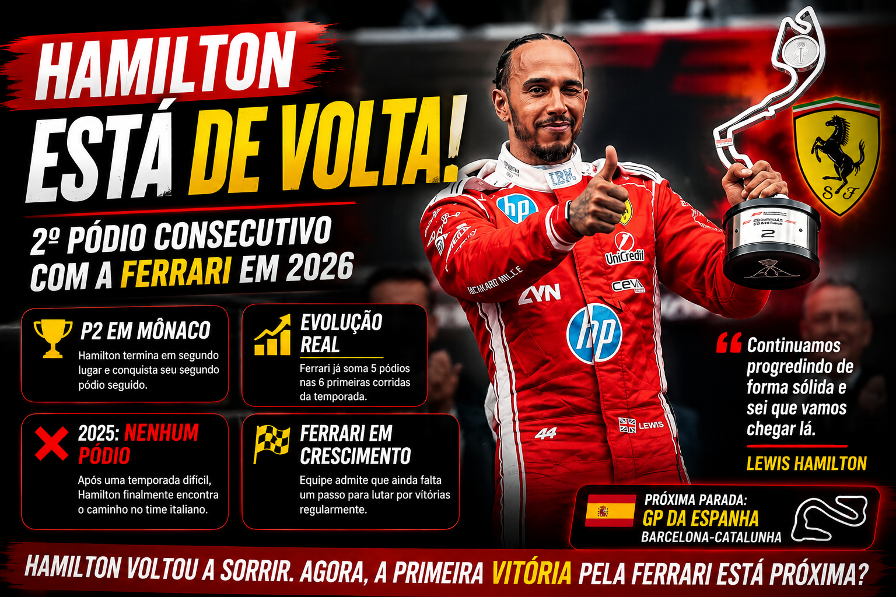

Lewis Hamilton Quebra Marca Histórica na Ferrari e Acende Sonho que Parecia Impossível em 2026

Lewis Hamilton finalmente encontrou o caminho na Ferrari?
Quando Lewis Hamilton decidiu trocar a Mercedes pela Ferrari, milhões de fãs imaginavam uma parceria histórica. Mas a realidade em 2025 foi muito diferente do esperado.
Sem conquistar sequer um pódio durante toda sua temporada de estreia em Maranello, o heptacampeão viu crescerem as dúvidas sobre sua capacidade de voltar a disputar vitórias na Fórmula 1.
Agora, poucos meses depois, o cenário mudou completamente.
Com o segundo lugar conquistado no GP de Mônaco 2026, Hamilton alcançou seu segundo pódio consecutivo e registrou um feito inédito desde sua chegada à Ferrari. Mais do que um simples resultado, a performance reforça uma pergunta que começa a ganhar força nos bastidores da categoria: a Ferrari finalmente encontrou o caminho para voltar ao topo?
Gostou do conteúdo? Confira nossa loja!
Produtos exclusivos de F1 para verdadeiros fãs.
 ACESSAR LOJA
ACESSAR LOJA
Hamilton conquista feito inédito desde chegada à Ferrari
O segundo lugar nas ruas de Monte Carlo representou muito mais do que mais um troféu.
Foi a primeira vez que Hamilton conseguiu terminar duas corridas consecutivas no pódio vestindo o macacão vermelho da Ferrari.
O britânico já havia terminado em segundo no Canadá e repetiu o resultado em Mônaco, consolidando o melhor momento de sua trajetória com a equipe italiana.
Além disso, a sequência marca algo que Hamilton não alcançava desde 2024, quando ainda defendia a Mercedes.
Naquele período, o piloto conquistou pódios consecutivos em Silverstone, Hungria e Bélgica. Agora, a história começa a se repetir.
O que mudou na Ferrari em 2026?
A principal diferença está no novo regulamento técnico da Fórmula 1. Enquanto a Ferrari sofreu para encontrar competitividade em 2025, a equipe italiana parece ter interpretado melhor as mudanças implementadas para a temporada atual.
Os números ajudam a explicar. Nas seis primeiras corridas de 2026, a Ferrari já conquistou cinco pódios. O desempenho também consolidou a equipe na segunda posição do Campeonato de Construtores.
Mais importante ainda: Hamilton demonstra uma confiança muito maior dentro do carro. Segundo o chefe da equipe, Fred Vasseur, o piloto está cada vez mais confortável com o comportamento do SF-26. Essa evolução vem aparecendo diretamente nos resultados.
Como foi a corrida de Hamilton em Mônaco?
O GP de Mônaco exigiu paciência, estratégia e precisão. Hamilton largou da segunda fila e rapidamente herdou a segunda posição após os problemas enfrentados por Max Verstappen na largada.
Durante a corrida, administrou o ritmo, executou bem sua estratégia e conseguiu minimizar os danos de uma punição de cinco segundos por excesso de velocidade no pit lane. Enquanto muitos rivais enfrentavam dificuldades, o britânico manteve a calma.
Nem mesmo o Safety Car, a bandeira vermelha ou a relargada nas voltas finais impediram o piloto de garantir mais um resultado importante. Ao final, cruzou a linha de chegada atrás apenas de Kimi Antonelli.
Antonelli é o obstáculo que separa Hamilton das vitórias?
Essa talvez seja a principal questão da temporada. Embora a Ferrari tenha evoluído, a Mercedes possui atualmente o piloto mais dominante do grid. Kimi Antonelli venceu o GP de Mônaco e chegou à impressionante marca de cinco vitórias consecutivas.
O jovem italiano lidera o campeonato com autoridade e tem transformado pole positions em vitórias de forma consistente. O próprio Hamilton reconheceu que a Ferrari ainda precisa dar mais um passo para disputar triunfos regularmente. A boa notícia para os fãs da Scuderia é que essa diferença parece menor do que era há alguns meses.
O drama de Leclerc em casa
Enquanto Hamilton comemorava mais um pódio, Charles Leclerc viveu um pesadelo diante da torcida local. O piloto monegasco ocupava uma posição competitiva quando sofreu problemas nos freios traseiros.
A falha provocou um acidente nas voltas finais e resultou no abandono da corrida. Segundo o próprio Leclerc, a Ferrari já identificou a origem do problema e pretende implementar correções antes do GP da Espanha. Fred Vasseur também confirmou que a equipe investigará detalhadamente a falha para evitar novos episódios semelhantes.
O que esperar da Ferrari no GP da Espanha?
Barcelona será um teste importante. Diferente das características únicas de Mônaco, o circuito espanhol costuma oferecer uma leitura muito mais precisa do desempenho real dos carros.
Por isso, a próxima etapa pode responder uma das maiores dúvidas da temporada: a Ferrari realmente está pronta para desafiar Antonelli e a Mercedes? Ou os recentes pódios representam apenas uma boa fase momentânea? As próximas corridas devem trazer essa resposta.
Uma nova fase para Hamilton?
O segundo pódio consecutivo não transforma automaticamente Hamilton em candidato ao título. Mas muda completamente a narrativa de sua passagem pela Ferrari.
Depois de um ano inteiro sem subir ao pódio, o britânico volta a aparecer entre os protagonistas da Fórmula 1. Se a evolução da Ferrari continuar no mesmo ritmo, a primeira vitória de Hamilton com a equipe italiana pode estar mais próxima do que muitos imaginavam. E isso é algo que certamente preocupa os adversários.
Leia também no Ponto de Frenagem:

Kimi Antonelli domina GP de Mônaco e dispara na liderança